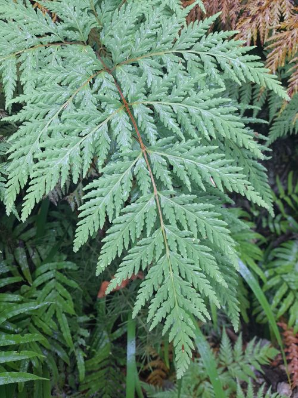

Loxsomataceae
(No common name)
Loxsomataceae is a small family of terrestrial ferns in the order Cyatheales, comprising two genera, Loxsoma and Loxsomopsis. These ferns grow from long-creeping rhizomes covered in characteristic stiff hairs and bear large, highly divided fronds. They are distinguished by their marginal sori enclosed in urn-shaped indusia. The family has a notably disjunct distribution, with Loxsoma endemic to New Zealand and Loxsomopsis found in the Neotropics.
Overview
Loxsomataceae represents another distinct, relatively early diverging lineage within the Cyatheales order. Unlike the tree ferns of Cyatheaceae or Dicksoniaceae, members of this family are terrestrial ferns that spread via long-creeping rhizomes covered in stiff, reddish-brown hairs or bristles. They do not form upright trunks.
The family contains only two genera: Loxsoma, with the single species L. cunninghamii endemic to the North Island of New Zealand, and Loxsomopsis, with several species distributed patchily in the mountains from Costa Rica south to Bolivia. This wide geographical separation between the two genera is a point of significant biogeographic interest, suggesting an ancient origin and subsequent extinction in intermediate areas or long-distance dispersal.
Loxsomataceae ferns typically inhabit moist, shaded forest environments, often on slopes or banks. They are recognized by their large, finely divided fronds and, most distinctively, their marginal sori enclosed within prominent urn-shaped or purse-shaped indusia. Like most ferns in Cyatheales (except Salviniales which isn't closely related), they are homosporous.
Quick Facts
- Scientific Name: Loxsomataceae
- Common Name: No widely accepted common name.
- Number of Genera: 2 (Loxsoma, Loxsomopsis)
- Number of Species: Approximately 5-7
- Distribution: Disjunct: New Zealand (Loxsoma) and Neotropics (Costa Rica to Bolivia - Loxsomopsis).
- Key Features: Terrestrial, long-creeping hairy rhizomes (no trunk), large compound fronds, marginal sori in urn-shaped indusia, homosporous.
- Evolutionary Group: Polypodiopsida (Leptosporangiate Ferns) - Cyatheales
Key Characteristics
Growth Form and Habit
Terrestrial ferns with slender, long-creeping rhizomes that grow horizontally across or just below the ground surface. They do not form erect trunks.
Fronds (Leaves)
Fronds arise spaced apart along the creeping rhizome. They are large (often 1-3 meters long).
- Structure: Pinnately compound, typically 2-pinnate-pinnatifid to 4-pinnate, often broadly triangular or ovate in outline.
- Texture: Somewhat leathery or herbaceous.
- Vernation: Young fronds show circinate vernation.
- Petioles (Stipes): Long, covered especially at the base with characteristic hairs/bristles.
Fronds are generally monomorphic (sterile and fertile fronds look similar).
Hairs/Bristles (Indument)
Rhizomes and petiole bases are covered in distinctive stiff, reddish-brown, multicellular hairs or bristles. True scales (like those in Cyatheaceae) are absent.
Sori and Indusial Characters
Loxsomataceae are homosporous. Spores are produced in distinctive sori located on the frond margins.
- Sorus Position: Sori are marginal, borne singly at the terminus of veins on the ultimate segments (lobes) of the frond.
- Receptacle: Sporangia are attached to an elongated receptacle within the indusium.
- Indusium: Each sorus is protected by a prominent, firm, urn-shaped or purse-shaped indusium that opens towards the frond margin. The indusium is formed from modified leaf tissue.
Spores
Spores are trilete, tetrahedral or globose-tetrahedral, often greenish when fresh, and may have a granular or subtly patterned surface.
Field Identification
Identifying Loxsomataceae relies on recognizing the combination of a creeping rhizome, large divided fronds, hairy indument, and unique marginal sori.
Primary Identification Features
- Habit: Terrestrial fern with a long-creeping rhizome (no trunk).
- Indument: Presence of stiff, reddish-brown hairs/bristles on rhizome and stipe bases.
- Marginal Sori: Sori located at the very edge of the frond segments.
- Urn-shaped Indusium: Sori enclosed in distinctive purse-like or urn-shaped indusia opening outwards.
- Large, Compound Fronds: Fronds typically large and 2-4 times pinnate.
Common Confusion Points
- Hymenophyllaceae (Filmy Ferns): Some filmy ferns have marginal sori and indusia, but they are much smaller, delicate, often translucent (one cell thick fronds), and have different indusial shapes (often tubular or two-lipped).
- Dicksoniaceae: While also in Cyatheales, Dicksoniaceae typically have trunks (or short stout rhizomes), often different indument (softer hairs), and marginal sori usually protected by a two-valved indusium.
- Dennstaedtiaceae: Some members are large, hairy ferns with creeping rhizomes, but their sori are typically protected by cup-shaped or purse-shaped indusia formed from the reflexed leaf margin, often differing in detail from Loxsomataceae.
Field Guide Quick Reference
Look For:
- Terrestrial, long-creeping rhizome
- Stiff reddish-brown hairs/bristles
- Large (2-4 pinnate) fronds
- Marginal sori
- Urn-shaped indusia opening outwards
- Habitat moist forests
Distinguish From:
- Filmy Ferns (size, texture)
- Dicksoniaceae (trunk, indument, sori)
- Dennstaedtiaceae (soral details)
- Cyatheaceae (trunk, scales, soral position/type)
Notable Examples
The family comprises two geographically separated genera.

Loxsoma cunninghamii
(No common name)
The single species in its genus, endemic to northern New Zealand (North Island and adjacent islands). Found in kauri forests and other moist, shaded environments. Characterized by its large, 3-4 pinnate fronds arising from a stout, creeping rhizome covered in bristles.

Loxsomopsis
(No common name)
Contains several species found in the Neotropics, from Costa Rica to Bolivia, typically in montane rainforests. Similar to Loxsoma with creeping rhizomes and large fronds, differing in finer morphological details of the frond cutting, spores, and indument.
Phylogeny and Classification
Loxsomataceae is placed within the order Cyatheales. It represents one of the earlier diverging lineages within this order, alongside families like Thyrsopteridaceae, Culcitaceae, and Plagiogyriaceae. Its exact phylogenetic position relative to these other early branches can sometimes vary between studies, but it is consistently placed outside the core group containing Cyatheaceae and Dicksoniaceae.
The highly disjunct distribution (New Zealand and Neotropics) suggests an ancient origin, possibly dating back to Gondwanan times, with subsequent extinction across much of its former range or perhaps long-distance dispersal events. Its distinct morphology and isolated phylogenetic position make it important for understanding the diversification of the Cyatheales.
Position in Plant Phylogeny
- Kingdom: Plantae
- Clade: Tracheophytes (Vascular plants)
- Class: Polypodiopsida (Leptosporangiate ferns)
- Order: Cyatheales
- Family: Loxsomataceae
Evolutionary Significance
Loxsomataceae is significant for:
- Early Divergence in Cyatheales: Helps reconstruct the evolutionary history of the tree fern order.
- Biogeography: Its striking disjunct distribution provides clues about past continental connections and plant migration/extinction patterns.
- Morphological Traits: Shows a combination of features (creeping rhizome, hairy indument, marginal sori) distinct from the core tree fern families.